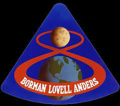

About the Apollo Missions
Manned Apollo Missions
Apollo VII: This is the first manned crew mission including Walley Schirra, Don Eisele and Walter Cunningham which had an objective of testing out the command module which would be used to bring the crew safely to the moon and back. They spent nearly eleven days in space.

Apollo VIII: This is the first mission to orbit the moon and come back safely to Earth. Their objective was to test performance of the Command Service Module(CSM) including navigation, translunar injection, communications and to make sure they have enough resources to get back to Earth. Apollo 8 included astronauts Frank Borman, James Lovell and William Anders
Apollo IX: The main objective of Apollo 9 was to test their first crewed Lunar Excursion Module(LEM). This is the first mission to use their LEM. This was an Earth orbit mission which also tested spacecraft systems and general things other than the LEM. Apollo 9 included astronauts James McDivitt, Russell Schweickart and David Scott.

Apollo X: Apollo 10 was almost the full dress rehearsal for the first lunar landing mission which included all the critical things needed for lunar landing including docking the CSM with the LEM. The commander and lunar module pilot flew the LEM for about eight hours before docking again. Apollo 10 included astronauts Thomas Stafford, Eugene Cernan and John Young.

Apollo XI: Apollo 11 was the first ever moon landing made by mankind lifting off on July 16, 1969 and landed on the moon on July 20, 1969 at the "Sea of Tranquility". Neil Armstrong along with Edwin(Buzz) Aldrin are the first two people to walk on the moon with Michael Collins as the command module pilot. As Neil stepped on the moon, he said "That's one small step for man, one giant leap for mankind".

Apollo XII: Apollo 12 was the second trip to the moon including astronauts Charles(Pete) Conrad, Alan Bean and Richard Gordon. Their main objective was to recover pieces of the lunar robot Surveyor III which has been on the moon for more than two years. They landed on the "Ocean of Storms".

Apollo XIII: Apollo 13 was the third attempt for a moon landing slated to land on "Fra Mauro Highlands". During the middle of their flight, they got an oxygen tank explosion which caused them to miss the moon landing. Due to the explosion, the command module also became low on power very easily which means they had to power down the entire module and use the lunar module as a lifeboat. Fortunately the came back to Earth and all astronauts were safe! The crew include James Lovell, Fred Haise and Jack Swigert.

Apollo XIV: Apollo 14 was the 3rd successful trip to the moon landing at Apollo 13's original landing site of Fra Mauro Highlands. It was probably the smoothest landing at this point they spent nine hours on the moon performing experiements and Shepard recorded to have walked more than 9,000 ft on the lunars surface. Astronauts include Alan Shepard, Edgar Mitchell and Stuart Roosa.

Apollo XV: Apollo 15 was the 4th successful lunar landing. This is the first mission to carry a lunar rover on board to explore the moon more. The commander and lunar module pilot spent more than 18 hours on the surface and traveled more than 17 miles on the rover. Astronauts are David Scott, James Irwin and Alfred Worden.
Apollo XVI: Apollo 16 was the 5th successful lunar mission including astronauts John Young, Charles Duke and Thomas(Ken) Mattingly. They traveled more than 16 miles with the rover and the mission was cut short by a day due to problems.
Apollo XVII: Apollo 17 was the last lunar landing of the Apollo missions including astronauts Eugene Cernan, Harrison Schmitt and Ronald Evans. They collected more sample and Harrison Schmitt was the first scientist-astronaut to reach the moon.